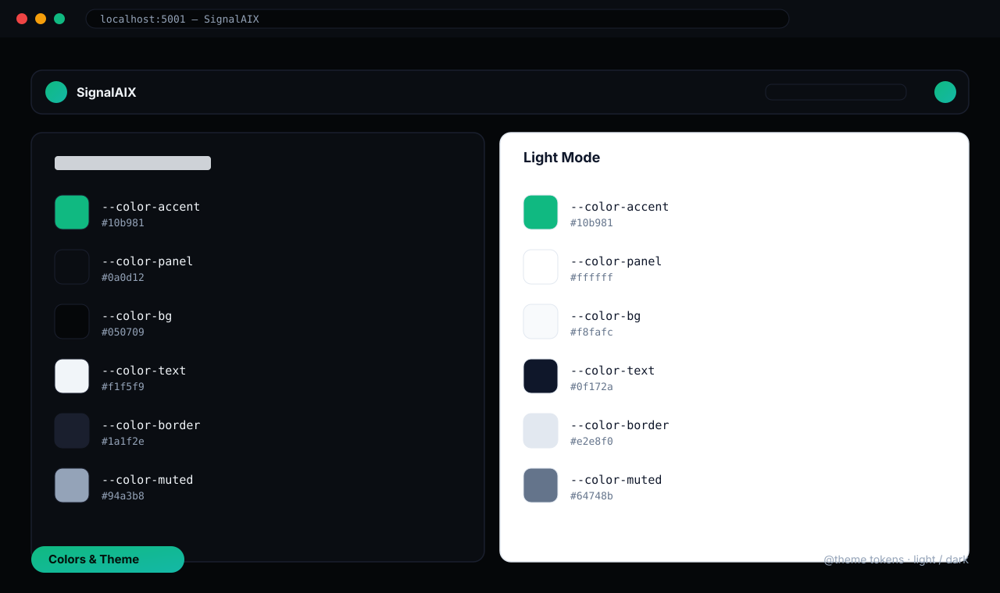

Documentation
SignalAIX
AI Forex & Crypto Trading Signals
A premium, modern admin dashboard template for an AI-powered Forex & Crypto trading-signals / market-prediction platform — ~40 ready-made pages, light/dark theme, real charts, and fully responsive down to 320px.
Getting Started
SignalAIX is built with a focus on high-performance visuals, real-time data representation, and intuitive navigation. It ships ~40 ready-made pages across 8 menu sections, a light/dark theme, and is fully responsive down to 320px. This documentation will guide you through the setup, customization, and deployment of your platform.
If you have any questions, feel free to contact us at UIAXIS.
Features
-
Modern Stack: HTML5, Webpack 5, Tailwind CSS
v4 (CSS-first, no
tailwind.config.js). - No framework: plain HTML enhanced with small, dependency-free vanilla JS modules — no jQuery, Alpine, or React.
- Responsive: built & tested down to 320px — no horizontal scroll on any page.
-
Dark Mode: emerald-accent light/dark theme, preference saved to
localStorage.
- Real Charts: Chart.js line, bar, doughnut, radar, gauges & sparklines (not images) that re-color on theme toggle.
- AI Intelligence: Market Summary, Prediction Models, Risk Analyzer, Trade Journal, Strategy Builder.
- Tools & Analytics: heatmaps, trend/pattern scanners, economic calendar, portfolio & P/L tracking, watchlists.
- Rich UI: slide-in drawers, toasts, tabs, multi-filter + search, sortable tables, toggles, range sliders.
Folder Arrange
Unzip the archive and open the folder "signalaix-html". This folder contains all the source files.
- src/*.html — the ~40 individual dashboard pages (one file per page).
-
src/partials — reusable layout inlined at build time:
sidebar.html&top-header.html. -
src/css — CSS files:
common.css(Tailwind import + theme tokens) &loader.css(page loader). -
src/js — JavaScript: the
index.jsentry point, shared modules (common.js,sidebar.js,header.js), plus one controller per interactive page. -
src/assets/images — images and favicon (
logo.png,favicon.png, pluscrypto-icons/andavatars/). Fonts are loaded from Google Fonts, so there is no local fonts folder. -
dist — the final production build, generated by
npm run build(do not edit). -
node_modules — project dependencies, generated by
npm install. - webpack.config.js — Webpack config (auto-discovers pages, inlines partials).
- watch-new-files.js — dev helper that restarts the server when pages/partials change.
- postcss.config.mjs — PostCSS config (Tailwind v4).
- package.json — project metadata, dependencies, and scripts.
- readme.md — quick-start guide bundled with the source.
Full Page List
SignalAIX includes ~40 premium HTML pages, organized into the 8 sidebar sections below.
1. Main
- index.html (Dashboard): the main hub — KPI cards, performance chart, signal cards, watchlist, recent trades.
- live-signals.html: real-time buy/sell signal feed with filters, details, and export drawers.
- ai-signal-generator.html: configure and generate AI trading signals (market/asset/timeframe/strategy).
- market-overview.html: multi-market prices, top movers, economic events, and live signals.
2. AI Intelligence
- ai-market-summary.html: AI market digest with a price ticker, sentiment, and multi-tab charts.
- ai-prediction-models.html: model cards, accuracy meters, and prediction history.
- ai-risk-analyzer.html: portfolio risk gauge, exposure heatmap, correlation & stress tests.
- ai-trade-journal.html: trade log with AI insights, analytics charts, and an activity heatmap.
- ai-strategy-builder.html: visual strategy builder with indicators, rules, and a backtest lab.
3. Trading Tools
- forex-heatmap.html & crypto-heatmap.html: color-coded strength/performance heatmaps.
- trend-scanner.html: trend strength scanner across pairs and timeframes.
- pattern-detection.html: AI candlestick / chart-pattern detection.
- volatility-index.html: VIX-style gauge, fear & greed, and a volatility heatmap.
- economic-calendar.html: filterable economic-events calendar (table / list / timeline).
- news-sentiment.html: news feed with AI sentiment scoring.
- correlation-matrix.html: asset correlation matrix with detail drawer.
4. Market Analytics
- forex-analytics.html & crypto-analytics.html: deep analytics dashboards.
- top-gainers-losers.html: ranked movers tables.
- market-sentiment.html: per-asset sentiment + Fear & Greed meter.
- liquidity-zones.html: liquidity zone analysis.
- price-action-monitor.html: live price-action table with pattern/signal detection.
5. Portfolio
- my-portfolio.html: holdings, allocation, performance, and AI insights.
- open-positions.html: positions table/cards with modify & close drawers.
- trade-history.html: historical trades with P/L charts and filters.
- performance-analytics.html: performance score, returns, risk, strategies & assets.
- risk-metrics.html: risk score, exposure, volatility, correlations & alerts.
- pl-overview.html: profit/loss overview with a daily P/L calendar.
6. Watchlists
- forex-pairs.html & crypto-pairs.html: watchlists with grid/table views and per-pair detail.
- custom-alerts.html: create and manage price/signal alerts.
- saved-signals.html: bookmarked signals with filters and detail drawer.
7. Automation
- bot-center.html: trading-bot management (start/stop/pause, config drawer).
- auto-signal-forwarder.html: forward signals to Telegram/Discord/Email/Webhook.
- webhook-automations.html: webhook endpoints, delivery logs, and templates.
- api-integrations.html: API keys (show/hide/copy) and third-party integrations.
8. Account
- profile-security.html: profile, password, 2FA, sessions, API keys, privacy, activity log.
- notification-settings.html: channels, preferences, alert types, schedule & sounds.
- connected-exchanges.html: connect/manage exchange accounts and balances.
- subscription-billing.html: plans, payment methods, invoices, and usage.
- help-center.html: support hub with search, FAQ, video tutorials & tickets.
Installation
To set up the project locally, follow these steps:
- Ensure you have Node.js installed (v18+ / LTS recommended).
- Open your terminal in the signalaix-html directory.
-
Run the following command to install all necessary
dependencies:
npm install
Start Dev Server
To start the development environment with hot-reloading:
npm start
Once started, the project will be available at: http://localhost:5001
Adding / removing pages: use npm run dev instead of
npm start when you add or delete an .html page or edit a partial —
it watches for those changes and restarts the server so the new page is detected.
Build Project
To generate an optimized, minified production build:
npm run build
The compiled files will be generated in the dist/ folder, ready for deployment.
FTP Upload
- Open your FTP manager and connect to your hosting.
- Browse to the required directory (normally where index.html lives).
- Upload the files inside the dist folder.
02. Fonts
SignalAIX uses Google Fonts for a modern and
clean typography. The fonts are imported in
src/css/common.css.
/* Google Fonts Import */
@import url("https://fonts.googleapis.com/css2?family=Rajdhani:wght@500;600;700&family=Inter:wght@400;500;600;700&display=swap");
- Inter: Used for body text, UI elements, and general content.
- Rajdhani: Used for headings, specialized trading data, and accent text.
03. Source File (CSS)
All theme tokens and the minimal behavior CSS live in
src/css/common.css (the page loader is in
src/css/loader.css). There are no per-page CSS files — every
component is styled with Tailwind utility classes directly in the HTML. Webpack bundles the
CSS into the final build.
04. Source File (JS)
The single entry point is src/js/index.js, which imports the global CSS, the
shared scripts (common.js, header.js, sidebar.js), and
one self-contained controller per interactive page (e.g. live-signals.js). Webpack
bundles everything and injects the bundle into each page automatically.
Development Guide
Add New Page
SignalAIX uses a scalable multi-page architecture with automatic page discovery. Adding a new page is as simple as creating a new HTML file.
- Navigate to the
src/directory. - Create a new
.htmlfile (e.g.,new-feature.html) — copy an existing page and keep the<include-sidebar />+<include-top-header />tags and the two CDN<script>tags at the bottom. - Run
npm run dev. Webpack will automatically detect the file and generate a corresponding page in thedist/folder.
Pro Tip: You can organize pages into subdirectories within src/. Webpack mirrors the same directory structure in the dist/ output. If the page needs its own JS, add src/js/<page>.js and import it in src/js/index.js.
Modify Code (JS/CSS)
To change behavior or styling, edit the source files in the src/ directory.
- Logic (JS): page-specific logic lives in
src/js/<page>.js; the entry point issrc/js/index.jsand app-wide systems (theme, drawers, toasts) are insrc/js/common.js. - Styling (CSS/HTML): component styling is Tailwind utility classes written directly in the page's HTML. Theme tokens are in
src/css/common.css.
Build Step: keep npm start (or npm run dev) running while editing so Webpack re-bundles your changes in real time.
Add Partial
Partials are reusable HTML snippets (sidebar, top header) inlined at build time by the
html-webpack-simple-include-plugin.
To add a new partial:
- Create an HTML file in
src/partials/(e.g.,my-nav.html). - Open
webpack.config.jsand add your partial to thepartialFilesarray:const partialFiles = ["sidebar", "top-header", "my-nav"].map((partial) => { return { tag: `<include-${partial} />`, content: fs.readFileSync(path.resolve(__dirname, `src/partials/${partial}.html`)), }; }); - Include it in any page using the custom tag:
<include-my-nav />.
Customization Guide
Change Logo
The brand logo lives in the shared sidebar partial. To rebrand, replace
src/assets/images/logo.png with your own image (the sidebar references it as
assets/images/logo.png alongside the "SignalAIX" text in
src/partials/sidebar.html). You can keep the same filename to swap the logo with
no markup change, or edit the <img> in the sidebar partial to point at a
different file.
Note: because the logo is in the shared partials, editing it once updates every page after a rebuild.
Customize Colors & Theme
The template uses Tailwind CSS v4 with CSS variables for theming. The theme
tokens are in src/css/common.css, inside the @theme { … } block
(light mode) and the .dark { … } override (dark mode). The primary accent is
emerald #10b981.

Theme tokens in src/css/common.css — @theme (light) & .dark overrides.
Update the HEX values in the @theme or .dark blocks to change the
entire platform's color scheme instantly — the UI uses Tailwind classes
(bg-accent, text-text, border-border,
bg-panel) that map to these tokens and flip automatically between light and dark.
Support
If you have any questions, feel free to contact us at UIAXIS.